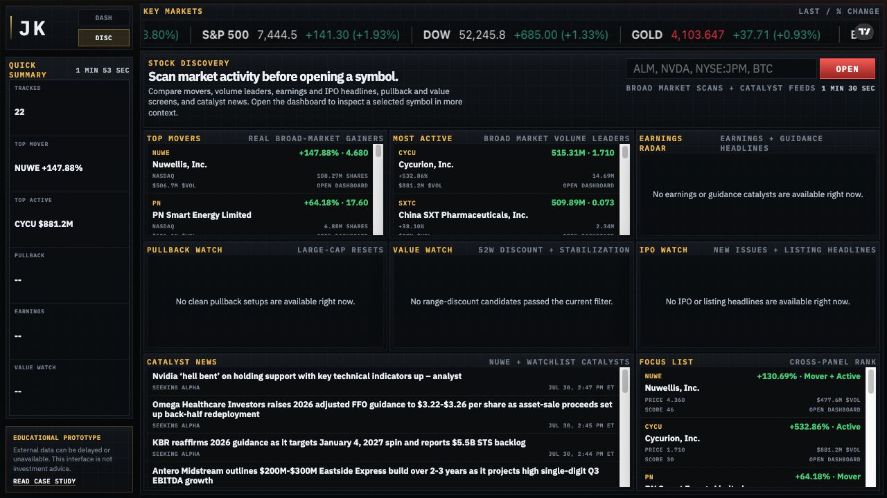

Own the core visualization.
The price chart is rendered from returned OHLCV data rather than hidden behind a full embedded dashboard. This keeps range behavior, labels, volume, and empty states under direct control.
A compact browser-based system for moving from a ticker symbol to price behavior, quote context, company information, and relevant market signals without switching between disconnected tools.

Market research often spreads one decision across a quote page, chart, company summary, news feed, and scanner. The interface brings those views into one dense but legible workspace.
The result is a two-part prototype: a symbol-led dashboard for deeper inspection and a discovery board for surfacing names worth opening. Both remain read-only and depend on public external data.
Accept common ticker formats and map them to the symbols expected by the available market and chart sources.
Request quote, chart, company, and news data with timeouts, short-lived caches, and multiple fallback paths.
Build a custom SVG candlestick-and-volume chart, quote board, range controls, and responsive information panels.
Carry the selected symbol between the scanner and dashboard so discovery can become focused inspection.
The visual language borrows from terminal and trading interfaces, but the interaction model is deliberately simple: one symbol, one selected time range, and clear secondary views.
The price chart is rendered from returned OHLCV data rather than hidden behind a full embedded dashboard. This keeps range behavior, labels, volume, and empty states under direct control.
Quote, news, company, and scanner feeds can fail independently. The interface preserves unaffected panels and gives each failed panel its own loading, empty, or unavailable state.
The scanner ranks movers, active names, pullbacks, earnings, value candidates, IPOs, and catalysts. Selecting a symbol opens the focused dashboard rather than overloading the scanner.
The screenshots show the production interface at desktop scale. The interactive pages remain the primary evidence because feed availability changes over time.
Quote metrics, custom charting, company context, technical and financial views, and headline feeds.

Cross-panel scanning intended to narrow the field before opening a symbol in the dashboard.
The next case study covers evidence architecture, accessibility, factual validation, and release quality.